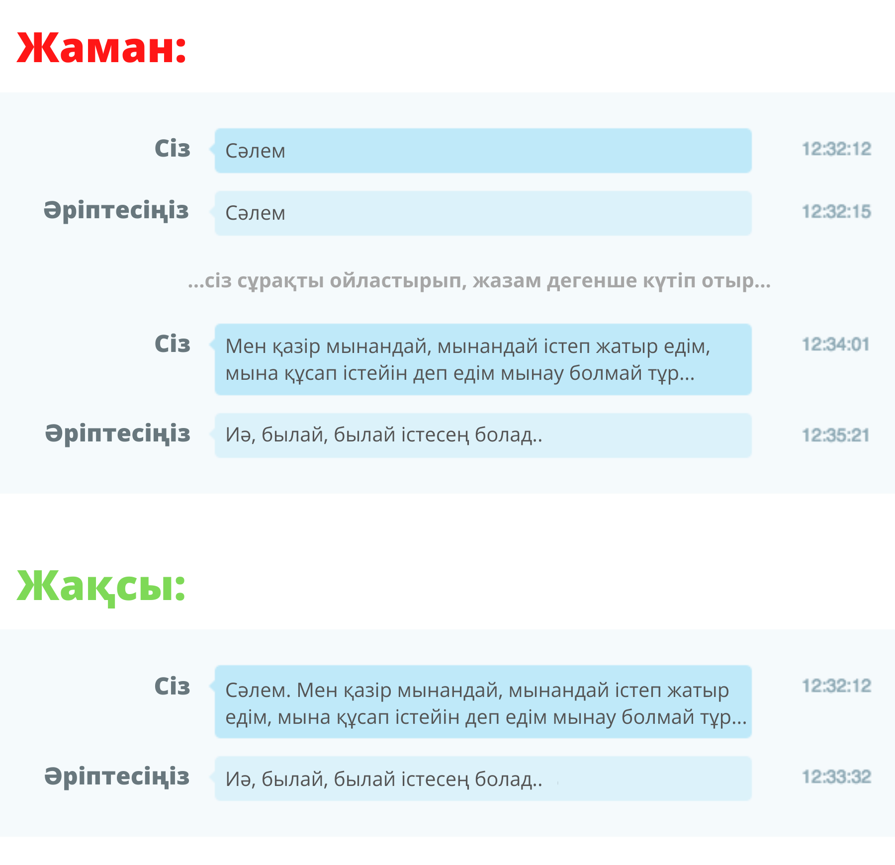

Мета-сұрақ қоюды доғарайық!
Мета-сұрақ — бұл басқа сұрақтарды меңзейтін сұрақ, мысалға:
— «Түсінікті, бірақ бұлай сұрағанның несі айып?»
— Адамның уақытын алады! Сіз өз уақытыңызбен қатар сізге жәрдем еткісі келген адамның уақытын аласыз! Түсінем. Сіз сыпайылық танытып, өмірде бетпе-бет тілдескендей бірден мәселеге көшпеуді жөн санайсыз. Бірақ бұл чат, бұл бөлек жер. Салыстыруға келмейді. Бұл жерде адамдар ауызша сөйлегеннен қарағанда анағұрлым баяу жазады. Сыпайылық танытам деп, амандасып, сұрақты жазам дегенше, сіз басқа адамның уақытын жейсіз.
Мынандай хаттарға да қатысты: «Сәлеметсіз бе!», «Сәлем. Осындасың ба?», «Уақыт табыла ма?», «Боссың ба?». Бүйткенше, бірден сұрақ қоя беріңіз!
Тағы бір жақсы жағы, сұрақты бірден қою арқылы сіз асинхронды байланыс орнатасыз. Егерде әңгімелесушіңіз желіде болмай, ал сіз ол келгенше байланыстан шығып кетсеңіз, әңгімелесушіңіз желіге қосылғанда сізге жауап беріп, көмектесе алады. «Сәлем» деген хатыңызға қарап, бал ашып, не боп қалды екен деп ойлап отырмай.
Тоқсан ауыз сөздің тобықтай түйіні бір сүгіретте:
